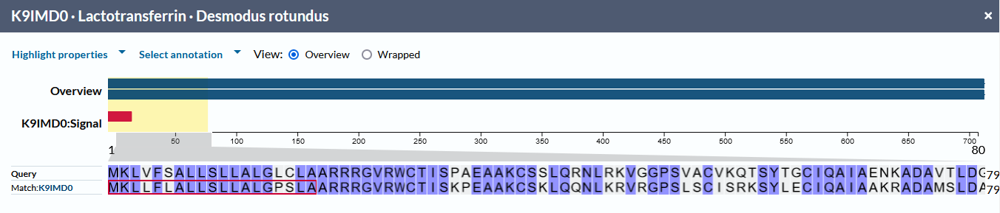
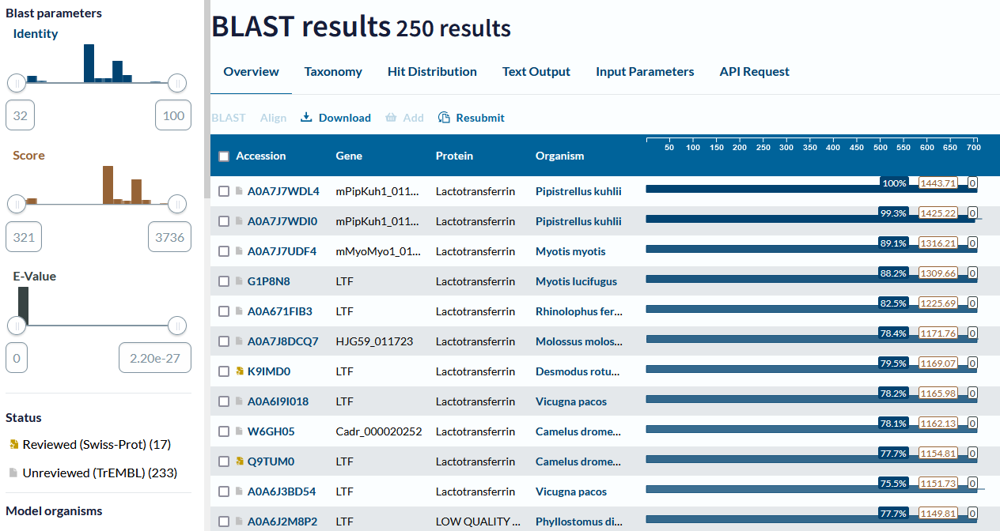

Pairwise Sequence Alignment
In the summer of 1965, Margaret Dayhoff sat in her office at the National Biomedical Research Foundation in Silver Spring, Maryland, surrounded by stacks of index cards. Each card held an amino acid sequence, painstakingly transcribed from the latest publications in biochemistry journals around the world. Dayhoff and her small team were assembling the first systematic, large-scale collection of protein sequences ever attempted: the Atlas of Protein Sequence and Structure.1 The project was laborious and, to many of her contemporaries, quixotic. What could one learn from staring at long strings of amino acid abbreviations?
1 The first edition of the Atlas appeared in 1965 with 65 sequences. By the 1978 edition (Dayhoff et al. 1978), it contained over 1,000 sequences organized into 71 superfamilies.
Dayhoff saw something her contemporaries missed. She noticed that cytochrome \(c\), a small electron-transfer protein found in the mitochondria of nearly every aerobic organism, had been sequenced in dozens of species by the mid-1970s. The human and chimpanzee versions differed at just one position out of 104. Human and horse cytochrome \(c\) differed at 12 positions. Human and tuna, at 21. Human and yeast, at 44. These numbers told a story about evolutionary time, but only if you could line up the sequences correctly and count the differences with care.
The trouble was that proteins from distant species had accumulated so many mutations that the correct alignment was no longer obvious. Insertions and deletions had shifted the reading frame. Conservative substitutions (leucine replacing isoleucine, say) blurred the signal. Dayhoff needed two things: a way to score how likely one amino acid was to replace another over evolutionary time, and an algorithm to find the best alignment under that scoring scheme. Both problems would occupy the field for the next two decades and produce some of the most widely used algorithms in all of biology.
This chapter develops the mathematical and algorithmic foundations of pairwise sequence alignment. We begin with substitution matrices, which quantify the evolutionary exchangeability of amino acids. We then turn to dynamic programming algorithms for global, local, and semiglobal alignment. We close with the statistical theory that tells us whether an alignment score is meaningful or merely a coincidence.
Substitution Matrices
When we align two sequences, we need a function \(s(a,b)\) that assigns a numerical score to the pairing of amino acid \(a\) with amino acid \(b\). A good scoring function should give high scores to pairs that evolution substitutes frequently and low scores to pairs that evolution avoids. The question is how to estimate these tendencies from data.
The PAM Matrices
Dayhoff’s approach was phylogenetic (Dayhoff et al. 1978). She collected 71 groups of closely related proteins, each group containing sequences that were at least 85% identical. At this level of similarity, the correct alignment is unambiguous and can be constructed by inspection. Within each group, she inferred a phylogenetic tree and mapped every amino acid substitution onto a branch of that tree. The total catalog contained 1,572 observed substitutions.
Let us formalize her construction. We have 20 amino acids indexed by \(a, b \in \{1, \ldots, 20\}\). Let \(n_{ab}\) denote the number of times amino acid \(a\) was observed to mutate into amino acid \(b\) (or \(b\) into \(a\)) across all branches of all trees. Because Dayhoff could not determine the direction of change on an unrooted tree, the raw counts are symmetrized: \[\label{eq:pam-raw-counts} n_{ab} = n_{ba}.\]
We want a \(20 \times 20\) mutation probability matrix \(\mathbf{M}\) where entry \(M_{ab}\) gives the probability that amino acid \(a\) is replaced by amino acid \(b\) in one “PAM unit” of evolutionary time.2 To compute \(M_{ab}\) from the raw counts, we need the mutability of each amino acid. Define \[\label{eq:mutability} m_a = \frac{\sum_{b \neq a} n_{ab}}{f_a \cdot N},\] where \(f_a\) is the background frequency of amino acid \(a\) in the dataset, and \(N\) is the total number of aligned positions examined. The mutability \(m_a\) measures how often amino acid \(a\) changes relative to how often it appears.
2 PAM stands for “Point Accepted Mutation.” One PAM unit is defined as the amount of evolutionary time in which 1% of amino acid positions are expected to have changed.
The off-diagonal entries of \(\mathbf{M}\) are then \[\label{eq:pam-off-diag} M_{ab} = \lambda \, m_a \, \frac{n_{ab}}{\sum_{c \neq a} n_{ac}}, \quad a \neq b,\] where \(\lambda\) is a proportionality constant chosen so that the expected number of mutations per position equals exactly 0.01 (that is, 1% divergence). The diagonal entries are fixed by the requirement that each row sums to one: \[\label{eq:pam-diag} M_{aa} = 1 - \lambda \, m_a.\]
The constraint that defines one PAM unit is \[\label{eq:pam-constraint} \sum_{a=1}^{20} f_a \left(1 - M_{aa}\right) = 0.01,\] which simply says that the overall fraction of positions expected to change is 1%. Substituting Equation [eq:pam-diag] into this constraint and solving for \(\lambda\) gives \[\label{eq:pam-lambda} \lambda = \frac{0.01}{\sum_{a=1}^{20} f_a \, m_a}.\]
The matrix \(\mathbf{M}\) describes one PAM unit of evolution. To model longer evolutionary distances, we use matrix exponentiation. The PAM-\(n\) mutation probability matrix is \[\label{eq:pam-n} \mathbf{M}^{(n)} = \mathbf{M}^n.\] Entry \(M^{(n)}_{ab}\) gives the probability that amino acid \(a\) evolves into amino acid \(b\) over \(n\) PAM units.3
3 This assumes a time-homogeneous Markov chain, which is an approximation. Real proteins evolve at different rates at different sites, and the amino acid composition drifts over time.
4 Why PAM-250 and not, say, PAM-100? At 250 PAMs, roughly 80% of amino acid positions have changed. This distance is appropriate for detecting remote homologs. For closely related sequences, PAM-120 or lower is more sensitive.
To convert these probabilities into an alignment scoring matrix, we use log-odds ratios. Define the target frequency as \[\label{eq:target-freq} q_{ab} = f_a \, M^{(n)}_{ab}.\] This is the probability that a random aligned pair consists of \(a\) in one sequence and \(b\) in the other, under the hypothesis that they share a common ancestor \(n\) PAM units ago. Under the null hypothesis of no relationship, the expected frequency of the pair \((a,b)\) is simply \(f_a \, f_b\). The log-odds score is \[\label{eq:pam-log-odds} s(a,b) = \log_2 \frac{q_{ab}}{f_a \, f_b} = \log_2 \frac{M^{(n)}_{ab}}{f_b}.\] The second equality follows from canceling \(f_a\). In practice these scores are multiplied by 10 and rounded to integers, yielding the familiar PAM-250 matrix printed in textbooks.4
A small numerical example makes the construction concrete. Suppose that among Dayhoff’s 1,572 substitutions, alanine (A) and serine (S) were observed to interchange 35 times, while alanine appeared at 8.3% of all positions. If the total number of substitutions away from alanine was 112, then the conditional probability of \(\text{A} \to \text{S}\) given that A mutates is \(35/112 \approx 0.31\). Multiplying by the mutability of A and the normalization constant \(\lambda\) yields \(M_{\text{A},\text{S}}\). After raising \(\mathbf{M}\) to the 250th power and taking the log-odds ratio against background frequencies, we obtain \(s(\text{A},\text{S}) = 1\) in the PAM-250 matrix, reflecting the fact that alanine-serine substitutions are slightly favored by evolution.
The BLOSUM Matrices
Henikoff and Henikoff took a different approach in 1992 (Henikoff and Henikoff 1992). Instead of inferring phylogenetic trees, they worked with the BLOCKS database: a collection of ungapped, multiply aligned segments of protein families. The idea was to count amino acid pair frequencies directly from these conserved blocks, sidestepping the need for evolutionary models altogether.
The construction of BLOSUM-\(X\) (where \(X\) is a clustering threshold) proceeds as follows. Within each block, sequences that are more than \(X\)% identical are merged into a single cluster. For BLOSUM-62, this threshold is 62%.5 Each cluster is treated as a single effective sequence, and all pairs of clusters contribute equally to the counts.
5 The clustering reduces the influence of closely related sequences. Without it, a block containing 50 nearly identical human hemoglobin sequences and 2 fish hemoglobins would be dominated by human-human comparisons.
Let \(f_{ab}\) denote the observed frequency of the pair \((a,b)\) across all columns of all blocks, where \(a\) comes from one cluster and \(b\) from a different cluster. The matrix \(f_{ab}\) is symmetric. The marginal frequencies are \[\label{eq:blosum-marginal} p_a = f_{aa} + \frac{1}{2}\sum_{b \neq a} f_{ab}.\] The expected pair frequency under independence is \[\label{eq:blosum-expected} e_{ab} = \begin{cases} p_a^2 & \text{if } a = b, \\ 2\, p_a \, p_b & \text{if } a \neq b. \end{cases}\] The log-odds score is \[\label{eq:blosum-score} s(a,b) = \frac{1}{\lambda} \log_2 \frac{f_{ab}}{e_{ab}},\] where \(\lambda\) is a scaling factor (typically chosen so that the matrix entries are in units of half-bits). In practice, scores are rounded to the nearest integer.
The BLOSUM and PAM matrices are constructed from the same principle (log-odds of observed versus expected pair frequencies) but they differ in their data sources and assumptions. PAM matrices extrapolate from closely related sequences using a Markov model; BLOSUM matrices measure substitution patterns directly at the evolutionary distance implied by the clustering threshold. For database searches, BLOSUM-62 has been found to outperform PAM matrices in most benchmarks, and it remains the default substitution matrix in BLAST (Altschul et al. 1997).
The log-odds formulation gives every score a direct biological interpretation. A positive score \(s(a,b) > 0\) means that the pair \((a,b)\) is observed more often in related sequences than expected by chance: evidence for homology. A negative score means the pair is observed less often: evidence against. A score of zero is neutral. The alignment algorithm does not need to know anything about biochemistry or evolution. It simply adds up scores and finds the path through the matrix that maximizes their sum. All the biology is encoded in the substitution matrix.
Dynamic Programming for Sequence Alignment
With a substitution matrix in hand, we can define the alignment problem precisely. Given two sequences \(\mathbf{x} = x_1 x_2 \cdots x_m\) and \(\mathbf{y} = y_1 y_2 \cdots y_n\), an alignment is a way of placing gaps (denoted “\(-\)”) into one or both sequences so that they become the same length, and then pairing up the characters column by column. The score of an alignment is the sum of the substitution scores for each matched pair, plus a penalty for each gap. We want to find the alignment with the highest total score.
A brute-force enumeration of all possible alignments is out of the question. The number of possible alignments of two sequences of length \(m\) and \(n\) grows as \(\binom{m+n}{m}\), which is exponential in the sequence lengths.6 The key insight, discovered independently by several groups in the late 1960s and 1970s, is that the problem has optimal substructure: the best alignment of two sequences can be built from the best alignments of their prefixes. This makes the problem amenable to dynamic programming.
6 For \(m = n = 100\), the number of alignments is approximately \(9 \times 10^{58}\).
Global Alignment: The Needleman–Wunsch Algorithm
Needleman and Wunsch published the first dynamic programming algorithm for sequence alignment in 1970 (Needleman and Wunsch 1970). The formulation we present here uses the streamlined recursion due to Gotoh and others, which is the version taught in most textbooks.
Define \(S_{i,j}\) to be the score of the optimal alignment of the prefixes \(x_1 \cdots x_i\) and \(y_1 \cdots y_j\). We use a linear gap penalty of \(d < 0\) for each gap character. The recurrence is \[\label{eq:nw-recursion} S_{i,j} = \max \begin{cases} S_{i-1,\, j-1} + s(x_i, y_j), \\ S_{i-1,\, j} + d, \\ S_{i,\, j-1} + d, \end{cases}\] with boundary conditions \[\label{eq:nw-boundary} S_{i,0} = i \cdot d, \quad S_{0,j} = j \cdot d, \quad S_{0,0} = 0.\] The three cases in the recurrence correspond to three possible operations at position \((i,j)\): match or mismatch \(x_i\) with \(y_j\), align \(x_i\) with a gap in \(\mathbf{y}\), or align \(y_j\) with a gap in \(\mathbf{x}\). The score of the optimal global alignment is \(S_{m,n}\), found in the bottom-right corner of the matrix.
The alignment itself is recovered by traceback: starting from \(S_{m,n}\), we follow pointers back through the matrix to \(S_{0,0}\). At each cell, the pointer indicates which of the three cases achieved the maximum. A diagonal pointer means we aligned \(x_i\) with \(y_j\). A vertical pointer means we placed a gap in \(\mathbf{y}\). A horizontal pointer means we placed a gap in \(\mathbf{x}\).
A worked example clarifies the procedure. Consider the sequences \(\mathbf{x} = \texttt{VDSCCY}\) and \(\mathbf{y} = \texttt{VESLCY}\). We use the PAM-250 substitution matrix and a linear gap penalty \(d = -8\). The relevant PAM-250 scores (in half-bit units) are:7
7 These scores are from the original PAM-250 matrix. Positive values indicate substitutions favored by evolution; negative values indicate disfavored substitutions.
| V | E | S | L | C | Y | |
|---|---|---|---|---|---|---|
| V | 4 | \(-2\) | \(-1\) | 2 | \(-2\) | \(-2\) |
| D | 2 | 3 | 0 | \(-4\) | \(-5\) | \(-4\) |
| S | \(-1\) | 0 | 2 | \(-3\) | 0 | \(-3\) |
| C | \(-2\) | \(-5\) | 0 | \(-6\) | 12 | 0 |
| Y | \(-2\) | \(-4\) | \(-3\) | \(-1\) | 0 | 10 |
The dynamic programming matrix \(S\) is filled row by row. The boundary conditions set the first row and column to multiples of \(d = -8\):
| \(-\) | V | E | S | L | C | Y | |
|---|---|---|---|---|---|---|---|
| \(-\) | 0 | \(-8\) | \(-16\) | \(-24\) | \(-32\) | \(-40\) | \(-48\) |
| V | \(-8\) | 4 | \(-4\) | \(-12\) | \(-20\) | \(-28\) | \(-36\) |
| D | \(-16\) | \(-4\) | 7 | \(-1\) | \(-9\) | \(-17\) | \(-25\) |
| S | \(-24\) | \(-12\) | \(-1\) | 9 | 1 | \(-7\) | \(-15\) |
| C | \(-32\) | \(-20\) | \(-9\) | 1 | 3 | 13 | 5 |
| C | \(-40\) | \(-28\) | \(-17\) | \(-7\) | \(-5\) | 15 | 13 |
| Y | \(-48\) | \(-36\) | \(-25\) | \(-15\) | \(-8\) | 7 | 25 |
Let us trace through a few cells to verify. Cell \((1,1)\): we align V with V, so \(S_{1,1} = S_{0,0} + s(\text{V},\text{V}) = 0 + 4 = 4\). Cell \((2,2)\): the diagonal gives \(S_{1,1} + s(\text{D},\text{E}) = 4 + 3 = 7\); the vertical gives \(S_{1,2} + d = -4 + (-8) = -12\); the horizontal gives \(S_{2,1} + d = -4 + (-8) = -12\). The maximum is 7 from the diagonal.
Cell \((3,3)\): diagonal gives \(S_{2,2} + s(\text{S},\text{S}) = 7 + 2 = 9\); vertical gives \(S_{2,3} + d = -1 + (-8) = -9\); horizontal gives \(S_{3,2} + d = -1 + (-8) = -9\). The maximum is 9. Cell \((4,5)\): diagonal gives \(S_{3,4} + s(\text{C},\text{C}) = 1 + 12 = 13\).
Following the traceback from \(S_{6,6} = 25\) back to \(S_{0,0}\), the optimal alignment is:
V D S - C C Y
V E S L C - Ywith score 25. The two sequences share V, S, C, and Y at aligned positions, with gaps accommodating the D/E and L/C differences.
The time complexity of Needleman–Wunsch is \(O(mn)\): we fill an \(m \times n\) matrix, and each cell requires constant-time computation. The space complexity is also \(O(mn)\) for the full matrix, though Hirschberg’s divide-and-conquer technique can reduce space to \(O(\min(m,n))\) while maintaining \(O(mn)\) time.
Local Alignment: The Smith–Waterman Algorithm
Global alignment forces us to align the entire length of both sequences. This is appropriate when comparing two complete proteins of similar length, but it fails badly when we want to find a conserved domain embedded in a longer, unrelated sequence. The solution is local alignment, introduced by Smith and Waterman in 1981 (Smith and Waterman 1981).

The modification is deceptively simple. We add a fourth option to the recurrence: reset the score to zero. \[\label{eq:sw-recursion} H_{i,j} = \max \begin{cases} 0, \\ H_{i-1,\, j-1} + s(x_i, y_j), \\ H_{i-1,\, j} + d, \\ H_{i,\, j-1} + d. \end{cases}\] The boundary conditions are \(H_{i,0} = 0\) for all \(i\) and \(H_{0,j} = 0\) for all \(j\). These two changes (the zero floor in the recurrence and the zero boundary) mean that the algorithm is free to ignore poorly scoring regions. Any prefix or suffix that would contribute a negative score is simply discarded.
The optimal local alignment score is not found in the bottom-right corner but at the position \((i^*, j^*)\) where \(H_{i,j}\) is maximal over the entire matrix: \[\label{eq:sw-max} S^* = \max_{i,j} H_{i,j}.\] Traceback begins at this maximum and proceeds backward through diagonal, vertical, and horizontal pointers until a cell with \(H_{i,j} = 0\) is reached. The resulting path defines the boundaries and content of the local alignment.
Smith–Waterman has the same \(O(mn)\) time and space complexity as Needleman–Wunsch. For short database searches, this is acceptable. For searching a query of length \(m = 300\) against a database of total length \(N = 10^{10}\) residues, it requires on the order of \(3 \times 10^{12}\) cell computations, which is why heuristic methods like BLAST exist.
Affine Gap Penalties
A linear gap penalty charges the same cost \(d\) for every gap character, regardless of whether it extends an existing gap or opens a new one. Biologically this is unrealistic. Insertions and deletions tend to occur as contiguous blocks: a frameshift or a loop insertion typically removes or adds several residues at once. Once a gap has been opened, extending it by one more residue should cost less than opening a fresh gap.
An affine gap penalty captures this intuition: \[\label{eq:affine-gap} W(k) = g + k \cdot e,\] where \(g < 0\) is the gap-opening penalty, \(e < 0\) is the gap-extension penalty, \(|e| < |g|\), and \(k\) is the length of the gap.8
8 Typical values for protein alignment are \(g = -11\) and \(e = -1\) in BLAST’s default parameterization.
To handle affine gap penalties efficiently, we introduce three matrices instead of one. Let \(\mathbf{M}\), \(\mathbf{I}_x\), and \(\mathbf{I}_y\) denote three score matrices where:
\(M_{i,j}\) is the score of the best alignment of \(x_1 \cdots x_i\) and \(y_1 \cdots y_j\) that ends with \(x_i\) aligned to \(y_j\) (a match/mismatch column),
\(I^x_{i,j}\) is the score of the best alignment ending with \(x_i\) aligned to a gap (a gap in \(\mathbf{y}\)),
\(I^y_{i,j}\) is the score of the best alignment ending with \(y_j\) aligned to a gap (a gap in \(\mathbf{x}\)).
The recurrences are:9 \[\begin{aligned} \label{eq:affine-M} M_{i,j} &= s(x_i, y_j) + \max \begin{cases} M_{i-1,\,j-1}, \\ I^x_{i-1,\,j-1}, \\ I^y_{i-1,\,j-1}, \end{cases} \\[6pt] \label{eq:affine-Ix} I^x_{i,j} &= \max \begin{cases} M_{i-1,\,j} + g + e, \\ I^x_{i-1,\,j} + e, \end{cases} \\[6pt] \label{eq:affine-Iy} I^y_{i,j} &= \max \begin{cases} M_{i,\,j-1} + g + e, \\ I^y_{i,\,j-1} + e. \end{cases} \end{aligned}\] The optimal alignment score is \(\max(M_{m,n},\, I^x_{m,n},\, I^y_{m,n})\). The traceback now moves between three matrices: a diagonal step in \(\mathbf{M}\) represents a match/mismatch, a vertical step in \(\mathbf{I}_x\) represents extending or opening a gap in \(\mathbf{y}\), and a horizontal step in \(\mathbf{I}_y\) represents extending or opening a gap in \(\mathbf{x}\). Transitions between matrices correspond to gap openings and closings.
9 This three-matrix formulation is due to Gotoh (1982). It runs in \(O(mn)\) time, the same as the linear-gap version. A naive implementation of affine gaps without the three-matrix trick would require \(O(mn \cdot \max(m,n))\) time.
Note that in Equations [eq:affine-Ix] and [eq:affine-Iy], the first case pays \(g + e\) (opening a new gap and inserting the first character), while the second case pays only \(e\) (extending an existing gap by one character). This asymmetry is what distinguishes affine gap penalties from the simpler linear model.
Semiglobal Alignment
Global alignment penalizes gaps at the ends of sequences. Local alignment ignores everything outside the aligned region. Between these two extremes lies semiglobal (or “end-free”) alignment, which does not penalize gaps at the beginning or end of either sequence. This variant is useful when one sequence is expected to be contained within the other, or when two sequences overlap at their termini.
The modifications to Needleman–Wunsch are straightforward. The boundary conditions become \[\label{eq:semiglobal-boundary} S_{i,0} = 0, \quad S_{0,j} = 0,\] so that leading gaps are free. To make trailing gaps free as well, we do not simply take \(S_{m,n}\) as the answer. Instead, the optimal score is \[\label{eq:semiglobal-score} S^* = \max\!\left(\max_{j} S_{m,j},\; \max_{i} S_{i,n}\right).\] We take the maximum over the last row and the last column, then trace back from that cell. Gaps between the traceback endpoint and the corner of the matrix correspond to unaligned tails, which receive no penalty.
Semiglobal alignment is the appropriate model when aligning a short peptide against a full-length protein, or when assembling overlapping sequence reads. In the peptide case, we initialize the first row (but not the first column) to zero and take the maximum over the last row.
Statistical Significance of Alignments
Finding a high-scoring alignment is only half the battle. The other half is deciding whether the score is biologically meaningful or merely the result of chance. Two unrelated random sequences will always produce some alignment with a positive score, simply because the substitution matrix contains positive entries. We need a theory that tells us the probability of observing a score at least as high as \(S\) by chance alone.
The Karlin–Altschul Theory
Karlin and Altschul provided the theoretical foundation in 1990 (Karlin and Altschul 1990). Their central result concerns maximal segment pairs (MSPs): the highest-scoring pair of equal-length segments, one from each sequence, with no gaps.10
10 The restriction to ungapped alignments is important. The Karlin–Altschul theory gives exact distributional results only for the ungapped case. The extension to gapped alignments is empirical rather than theoretical, though it works well in practice.
Consider two random sequences of lengths \(m\) and \(n\), drawn independently from a distribution with amino acid frequencies \(p_1, \ldots, p_{20}\). Let \(s(a,b)\) be a scoring matrix with the property that \[\label{eq:negative-expected} \sum_{a,b} p_a \, p_b \, s(a,b) < 0,\] so that the expected score per aligned pair is negative (random alignments tend to have negative scores), and that at least one entry \(s(a,b) > 0\) (so that positive-scoring segments can exist). Under these conditions, the score \(S\) of the MSP follows a Gumbel extreme value distribution in the limit of long sequences.
The key parameter is \(\lambda\), defined as the unique positive solution to \[\label{eq:karlin-lambda} \sum_{a=1}^{20} \sum_{b=1}^{20} p_a \, p_b \, e^{\lambda \, s(a,b)} = 1.\] This equation always has a unique positive solution when conditions [eq:negative-expected] and the existence of positive scores are satisfied. To see why, define \(g(\lambda) = \sum_{a,b} p_a \, p_b \, e^{\lambda \, s(a,b)}\). We have \(g(0) = 1\) (trivially, since \(e^0 = 1\) and the \(p_a\)’s sum to one). The derivative \(g'(0) = \sum_{a,b} p_a \, p_b \, s(a,b) < 0\) by assumption. And \(g(\lambda) \to \infty\) as \(\lambda \to \infty\) because at least one \(s(a,b) > 0\). So \(g\) starts at 1, initially decreases, and eventually grows without bound. By the intermediate value theorem, there is exactly one positive \(\lambda\) where \(g(\lambda) = 1\) again.
The probability that the MSP score exceeds a threshold \(x\) is \[\label{eq:gumbel} P(S \geq x) \approx 1 - \exp\!\left(-K m n \, e^{-\lambda x}\right),\] where \(K\) is a second parameter that depends on \(\lambda\), the scoring matrix, and the sequence composition.11 For large \(x\), this simplifies to \[\label{eq:gumbel-approx} P(S \geq x) \approx K m n \, e^{-\lambda x}.\]
11 \(K\) can be computed from the scoring matrix and the sequence composition, but the formula is more involved than that for \(\lambda\). In practice, \(K\) is estimated by simulation.
The E-value (expectation value) is the expected number of MSPs with score at least \(S\) in a comparison of sequences of lengths \(m\) and \(n\): \[\label{eq:evalue} E = K m n \, e^{-\lambda S}.\] An E-value of 0.01 means that we expect to see a score this high 1% of the time by chance. In database searches where we compare a query of length \(m\) against a database of total length \(N = \sum_k n_k\), the effective search space is \(mN\) and the E-value becomes \[\label{eq:evalue-database} E = K m N \, e^{-\lambda S}.\] The standard threshold for reporting a hit is \(E < 0.01\) or \(E < 10^{-3}\), depending on the application.
A useful derived quantity is the bit score, which normalizes the raw score to be independent of the scoring system: \[\label{eq:bitscore} S' = \frac{\lambda S - \ln K}{\ln 2}.\] A bit score of 50 corresponds to an E-value of approximately \(mN \cdot 2^{-50}\). For a typical database search with \(mN \approx 10^{11}\), this gives \(E \approx 10^{-4}\), which is a confident hit.
The Karlin–Altschul theory tells us the distribution of alignment scores under the null hypothesis of random, unrelated sequences. It does not tell us the probability that two sequences are homologous given a high score. That is a question of Bayesian inference, requiring a prior on the fraction of database sequences that are truly related to the query. In practice, most biologists treat low E-values (say, below \(10^{-5}\)) as strong evidence of homology and high E-values (above 1) as absence of evidence, with a “twilight zone” in between where additional information (structural similarity, conserved motifs, phylogenetic context) is needed.
The BLAST Algorithm
Smith–Waterman is optimal but slow. For a protein query of length \(m = 300\) against a database of \(N = 10^{10}\) residues, full dynamic programming requires approximately \(3 \times 10^{12}\) operations. Altschul et al. introduced BLAST (Basic Local Alignment Search Tool) in 1990 (Altschul et al. 1990) as a heuristic that sacrifices a small amount of sensitivity for a dramatic gain in speed. The key idea is to avoid computing most of the dynamic programming matrix by focusing on short exact or near-exact matches that serve as “seeds” for longer alignments.

The original BLAST algorithm (we describe the protein version) works in three stages.
Stage 1: Word hits. BLAST scans the query sequence with a sliding window of length \(w\) (default \(w = 3\) for proteins). For each query word of length \(w\), BLAST generates a neighborhood: the set of all words that score at least \(T\) when aligned against the query word using the substitution matrix. For example, if the query word is PQG and the substitution matrix is BLOSUM-62, then neighborhood words might include PEG (if \(s(\text{Q},\text{E}) + s(\text{P},\text{P}) + s(\text{G},\text{G})\) exceeds \(T\)). BLAST then scans the database for exact matches to any neighborhood word. This scan is done using a lookup table and runs in time proportional to the database size, with a small constant.
Stage 2: Ungapped extension. Each word hit is extended in both directions without gaps, accumulating the alignment score using the substitution matrix. The extension stops when the running score drops more than \(X_{\text{drop}}\) below the best score seen so far. If the resulting ungapped alignment, called a high-scoring segment pair (HSP), exceeds a threshold score, it is retained. In the original BLAST, a single word hit triggers extension. The later “two-hit” method introduced in Gapped BLAST (Altschul et al. 1997) requires two non-overlapping word hits on the same diagonal within a distance \(A\) of each other before triggering extension. This reduces the number of extensions by roughly 90% while missing very few true hits.
Stage 3: Gapped extension. In the original 1990 BLAST, only ungapped HSPs were reported. Gapped BLAST (Altschul et al. 1997) takes each significant HSP from Stage 2 and performs a gapped Smith–Waterman alignment, but only in a band around the HSP rather than over the full \(m \times n\) matrix. The gapped extension also uses an \(X\)-drop criterion: it abandons the extension when the score drops too far below the running maximum. The result is a gapped alignment that is nearly as sensitive as full Smith–Waterman but requires far less computation.
The overall time complexity of BLAST is approximately \(O(m + N)\) for the word-matching stage and \(O(mN/20^w)\) for extensions, since only a fraction \(1/20^w\) of database positions produce word hits on average. With \(w = 3\), the speedup over full Smith–Waterman is roughly three to four orders of magnitude. The E-values reported by BLAST are computed using the Karlin–Altschul statistics from Section 3.1, with empirical corrections for the effect of gaps.
Optimal Mismatch Penalties for Nucleotide Alignment
For nucleotide sequences, the substitution matrix is much simpler than for proteins: there are only four letters, and we typically use a match score of \(+m_s\) and a mismatch penalty of \(-m_p\) (with \(m_s, m_p > 0\)). But how should we set the ratio \(m_p / m_s\)?
If we are searching for homologs that share a fraction \(r\) of their nucleotide positions in common (where \(r > 1/4\), since 1/4 is the expected identity for random sequences with equal base composition), then the optimal ratio can be derived from the Karlin–Altschul framework. The match score \(m_s\) and mismatch penalty \(m_p\) should satisfy \[\label{eq:optimal-mismatch} \frac{m_p}{m_s} = \frac{\ln\!\bigl(\frac{4(1-r)}{3}\bigr)}{\ln(4r)}.\] This formula assumes equal base frequencies (\(p_a = 1/4\) for each nucleotide) and comes from maximizing the sensitivity of the search at the target identity level \(r\).12
12 For \(r = 0.7\), the optimal ratio is approximately 2.3, meaning the mismatch penalty should be about 2.3 times the match reward. The commonly used \(+1/-3\) scoring scheme corresponds to an optimal target identity of about 0.75.
13 We assume that all three types of mismatch are equally likely, which is an approximation. Transitions (purine \(\leftrightarrow\) purine or pyrimidine \(\leftrightarrow\) pyrimidine) are more common than transversions in practice.
The derivation proceeds as follows. Under the random model, each position has probability \(1/4\) of matching by chance. Under the alternative model (true homology at identity fraction \(r\)), each position matches with probability \(r\) and mismatches with probability \(1-r\). For a match, the log-odds contribution is \(m_s + \log(r / (1/4)) = m_s + \log(4r)\) in the Karlin–Altschul framework (absorbing \(\lambda\)). For a mismatch, it is \(-m_p + \log((1-r)/(3/4)) = -m_p + \log(4(1-r)/3)\), where the factor of 3 accounts for three possible mismatches.13 For optimal sensitivity, the expected score per position under the alternative model should equal zero: \[\label{eq:mismatch-derivation} r \cdot m_s + (1-r) \cdot (-m_p) = 0.\] But this gives only the constraint \(m_p / m_s = r/(1-r)\). The more refined version in Equation [eq:optimal-mismatch] comes from requiring that \(\lambda = 1\) (natural scaling), which yields the logarithmic formula above. This ensures that the scoring system is calibrated so that the raw score is directly interpretable in terms of the Karlin–Altschul statistics.
In practice, one picks a target identity \(r\) based on the evolutionary distance of interest. For closely related genomes (\(r \approx 0.9\)), a \(+1/-1\) scheme works well. For more divergent comparisons (\(r \approx 0.65\)), \(+1/-3\) or \(+2/-7\) is appropriate. The BLASTN default of \(+2/-3\) targets sequences at roughly 72% identity.
Chapter Notes
The history of sequence alignment is intertwined with the history of molecular evolution. Dayhoff’s Atlas of Protein Sequence and Structure (Dayhoff et al. 1978) was as much a contribution to evolutionary biology as to bioinformatics; her PAM matrices encoded an explicit model of the protein evolutionary process calibrated from empirical substitution counts. The intellectual lineage runs from Pauling and Zuckerkandl’s 1962 proposal that protein sequences record evolutionary history, through Fitch and Margoliash’s 1967 phylogenetic trees built from cytochrome \(c\) distances, to Dayhoff’s mutation probability matrices. The BLOSUM matrices of Henikoff and Henikoff (Henikoff and Henikoff 1992) represented a philosophical shift: from model-based to empirical, from extrapolating close homologs to measuring substitution patterns directly at the distance of interest. Both approaches produce matrices that are broadly similar, and debates about which is “better” have largely been resolved by benchmarking on specific tasks.
The dynamic programming approach to sequence alignment has deep roots in operations research and computer science. Needleman and Wunsch (Needleman and Wunsch 1970) were not the first to apply dynamic programming to string comparison (that credit arguably goes to Vintsyuk’s 1968 work on speech recognition), but they were the first to apply it to biological sequences. The Smith–Waterman algorithm (Smith and Waterman 1981) adapted the approach for local alignment, and Gotoh’s 1982 paper provided the efficient three-matrix formulation for affine gap penalties that we use today. The algorithmic framework is now so standard that it is easy to forget how non-obvious these ideas were at the time. Needleman and Wunsch themselves did not frame their algorithm in the language of dynamic programming; the connection was made explicit by later authors.
Karlin and Altschul’s 1990 paper (Karlin and Altschul 1990) on the statistics of ungapped local alignments was a landmark contribution that transformed database searching from an empirical exercise into a rigorous statistical procedure. Before their work, the significance of alignment scores was assessed by ad hoc methods: shuffling sequences, fitting normal distributions, or simply using experience-based cutoffs. The Gumbel distribution result gave the field a principled framework for computing E-values and P-values. The extension of BLAST to gapped alignments (Altschul et al. 1997) required empirical calibration rather than exact theory, but the Karlin–Altschul parameters \(\lambda\) and \(K\) continue to provide the foundation.
BLAST itself (Altschul et al. 1990) is perhaps the single most influential algorithm in computational biology, measured by citations, by daily usage, or by scientific impact. Its design illustrates a recurring theme in bioinformatics: exact algorithms exist (Smith–Waterman) but are too slow for the scale of modern databases, so heuristic approximations that sacrifice a small amount of sensitivity for orders-of-magnitude speedups become the practical standard. The success of BLAST rests not only on its algorithmic cleverness (the word-hit seeding strategy) but also on the solid statistical foundation provided by Karlin and Altschul, which allows users to interpret results with confidence.